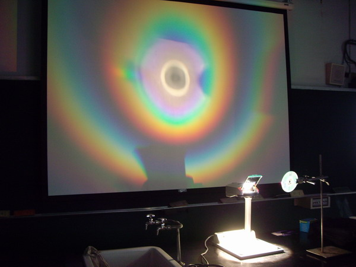
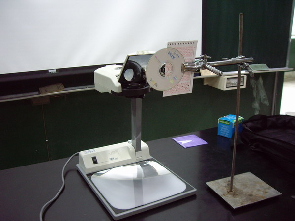
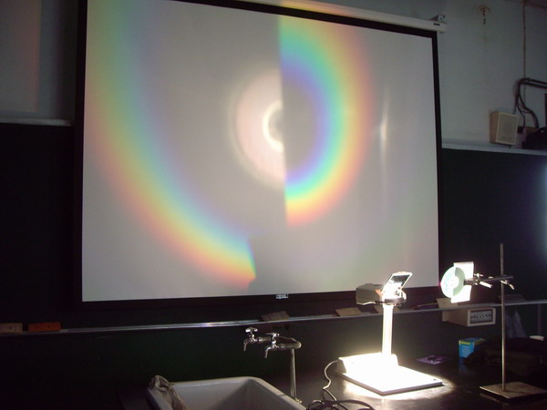
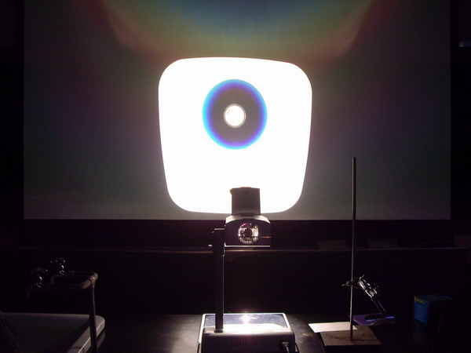
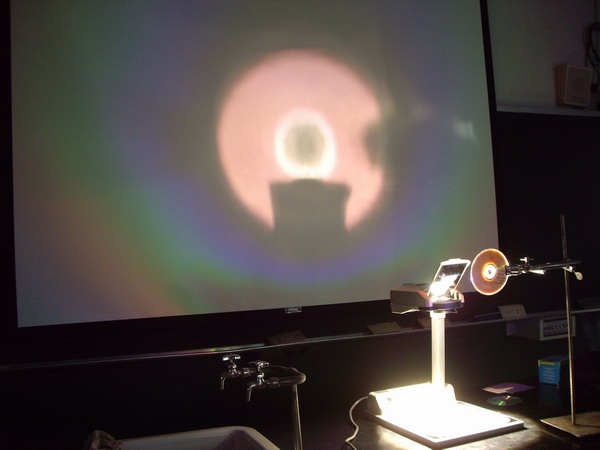
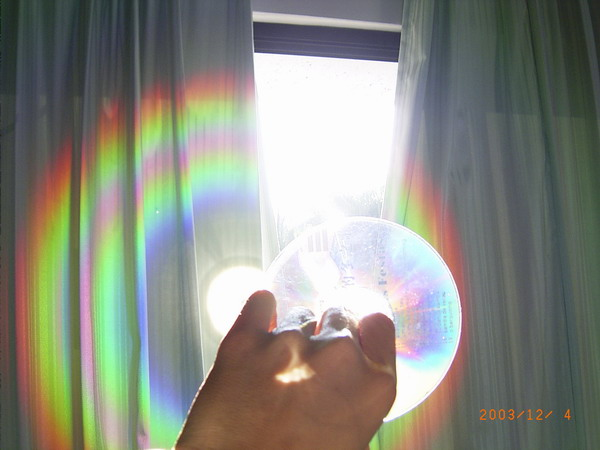
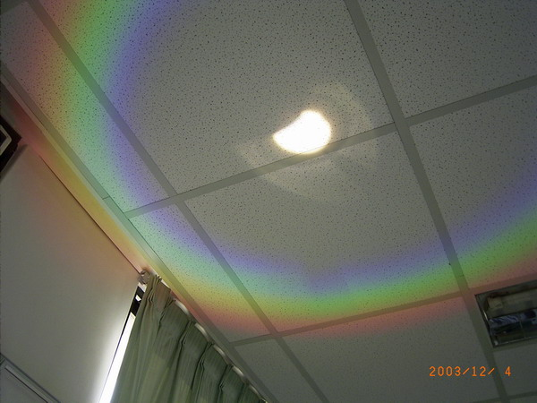
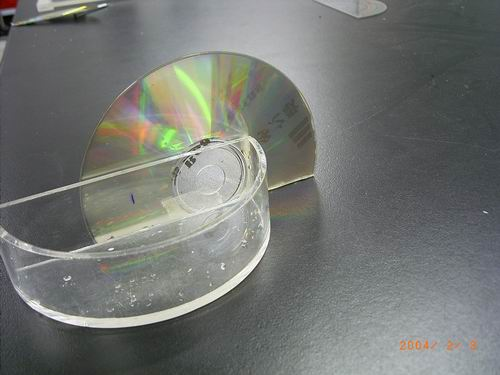
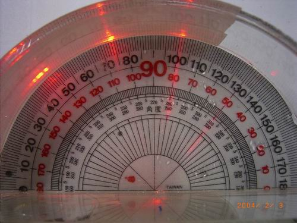

↑投影機的光線照在光碟片(CD)上，美麗的彩虹便投影在螢幕上了！
仔細看，彩虹有兩圈喔！

↑為了確定那兩圈彩虹是如何造成的，我們把光碟片遮住一半。

↑於是兩圈彩虹也都變一半了，只是，一個少掉左邊，一個少掉右邊。
根據這個資訊，你能說出這兩圈彩虹是如何產生的嗎？

↑把光碟騙直接平放在投影片的位置，投影出來的影像也能看到彩虹，只是
外圈紅色被強光覆蓋，看不見了。

↑把CD換成DVD，也會產生彩虹，但是彩虹比較大圈，也比較分散，看不清楚。
想一想，這是因為DVD光碟的軌距比CD的大或小呢？
--------------------------------以上2008年攝於師大附中---------------------------

↑窗外的日光照在光碟上，也能在窗簾上產生美麗的彩虹，也是兩圈喔！

↑改用DVD，將彩虹投影在天花板上，只看到一圈彩虹。

↑光碟繞射實驗器材。用到折射實驗的半圓形器皿，將光碟片固定在圓心。

↑雷射光從右上方(黑色130度)入射，經過光碟片(光柵)後反射(紅色130度)
與繞射(一級：紅色105度，二級：紅色80度)，由此可以算出光碟的軌距喔。
------------------------------以上2004年攝於新店高中-----------------------